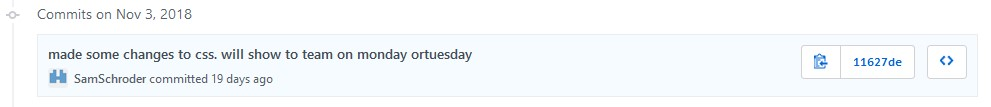
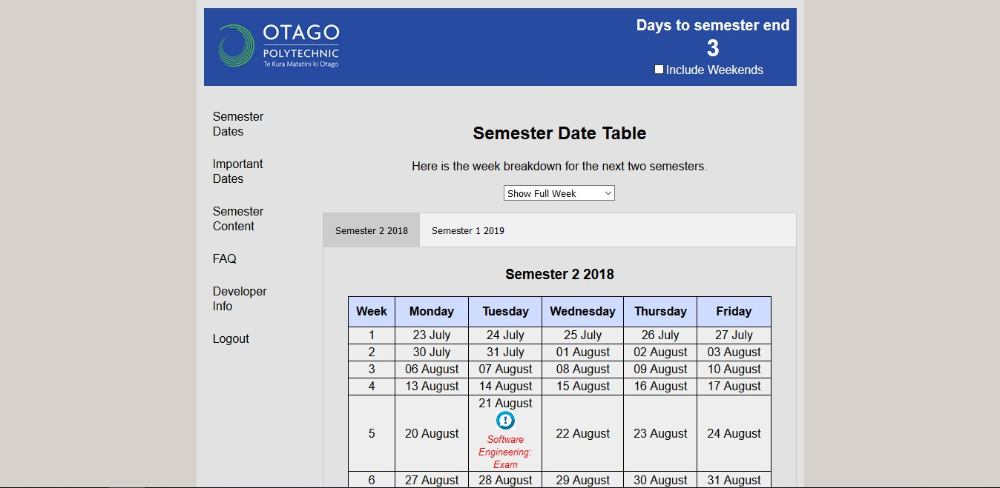

Technical Proficiency
Major Code Implementation
One of the min things we were asked to build from day one as a table showing all the dates of the semester.
In our first sprint we built two hard coded tables to show all the dates two semesters.
Even when we did this, we knew it would have to be changed eventually but we were not sure in what way yet.
During the second sprint I was assignment a ticket to make this tables display which week was the current week.
After discussing it with my team we decided the best way to do this would be in Javascript.
I had written small pieces of Javascript in the past but only small functions to do with making text appear on a button click and things of this nature.
Even though I lacked knowledge in regards to JavaScript I chose the ticket for myself because I wanted to take it as an opportunity to work with more complex Javascript than I had in the past and learn some in the process.
I started to write a Javascript file that would do this by detecting the dates that were hardcoded into the html but didn’t get very far.

After speaking with Claire the day after about some issues I was having with this, she talked about how we should remove the hardcoded table content anyway and we should have the tables fill dynamically. The thought behind this was that it would make updating the tables much easier. Rather than having to go into the html and change the entire table you would simply have to change the start date of the semester and it would calculate the rest for you. The ticket I was working on would be highly dependent on this code working. It was easily enough work that it could have been its own ticket but we decided getting it done would improve our overall project and also make my current ticket much simpler. Even though it was much more work than my original ticket was and changed what I had expected to be doing I chose to do it as Claire had completed her ticket and could assist when I needed.
Although the code in implement in our final design is no longer the exact same code I wrote, that code is heavily based off of this original code.
The code currently used pulls the start date and holiday start date for each semester from a database.
It still populates the tables in basically the same way, it really just gets the dates it uses differently.
Implementing this dynamic table filling code was tough but it improved my ability and confidence using Javascript.
I believe it also shows that I can work with an unfamiliar language without needing to learn it formally.
Major Contributions
HTML & CSS in Sprint One
One of the first requests we got from the user was for the application to be available on multiple devices such as their computer, their phone and their tablet and so on. We decided the best way to achieve this would be to make it browser based and have it hosted on a either a polytechnic server that the client has access too or a live website that they can access. Making it browser based would mean using HTML and CSS to build the GUI. I offered to take the ticket in the first sprint to make the application available on multiple devices.
I offered to take this ticket because I often enjoy working with HMTL and CSS in my own time as opposed to the others who said they had mainly used them in the web papers as part of the BIT. This made me feel I would do well being in charge of this part of the project. I began by putting together a basic layout for what each page of the website would look like, leaving space to include the content the others were putting together
Later in the sprint I implemented the page content the others had put together into the base page I had built to create the first pages of our website. I went on to link together all of the pages with the navigation bar I had implemented. These were the major parts of what I had been assigned to do this sprint, but I also made sure to correct issues with the CSS, including a merge conflict issue with the main CSS file and the odd small change to improve how things looked overall. I was put in charge of these issues because I was the most familiar with our CSS and felt very confident reading the CSS others had put together for their page content.
HTML & CSS in Sprint Seven
In our final sprint I finally took on the second ticket we had added to the list named "Attractive formatting". This ticket was something that had been asked for the first time we spoke with the client, but we had more pressing issues to work on and we wanted to wait until late in the semester to do it. We did this because we wanted to sort out as much of the on-page content as we could before we finalised the styling.
Before starting work on this ticket, the website looked like this:
We asked the client for suggestions and they suggested a sleeker colour scheme and grouping the items on the page together as opposed to having things floating in separate bubbles. I also asked my team for any other suggestions to improve the look of the site. Their suggestions included things such as removing the rounded corners and making the page content more central rather than spread across the entire window. I took these notes and went on to make changes to the CSS and some of the HTML.
I then waited until the next full group meeting to make some final changes to our CSS.

Our final product came out looking like this:
Over the entire semester I believe I was the person who did the most work directly involving the major HTML and CSS for out project. All of this not only makes this tool more pleasant to use but is the frame work of the interface to use the tool and access the data it holds. I feel this is a major contribution of work to the project that made a big difference to the final product.